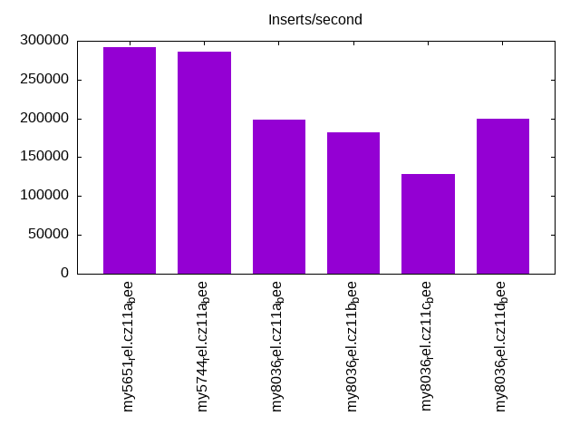
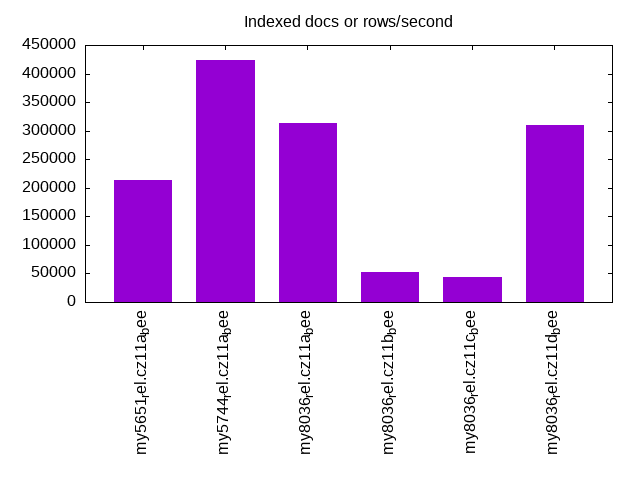
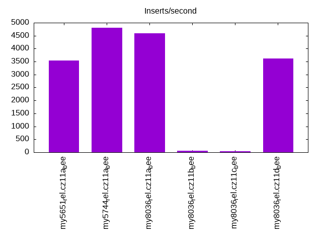
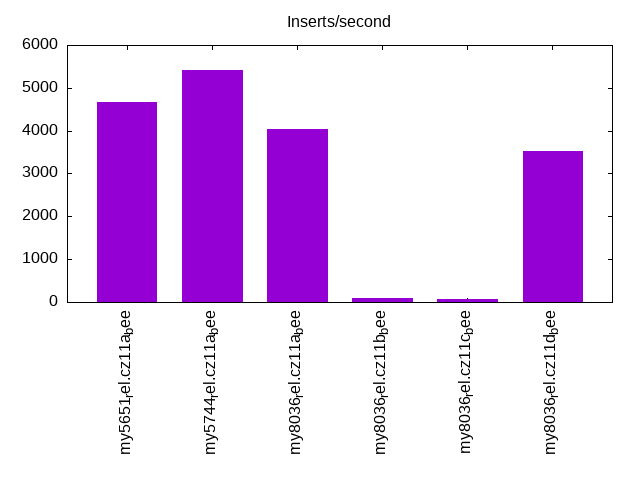
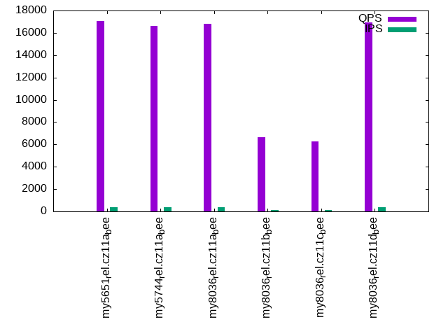
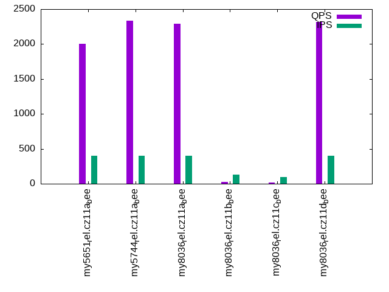
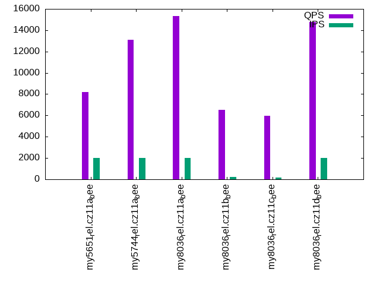
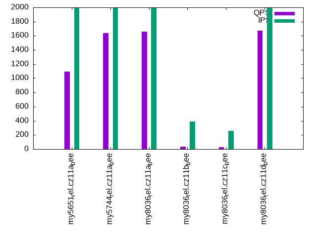
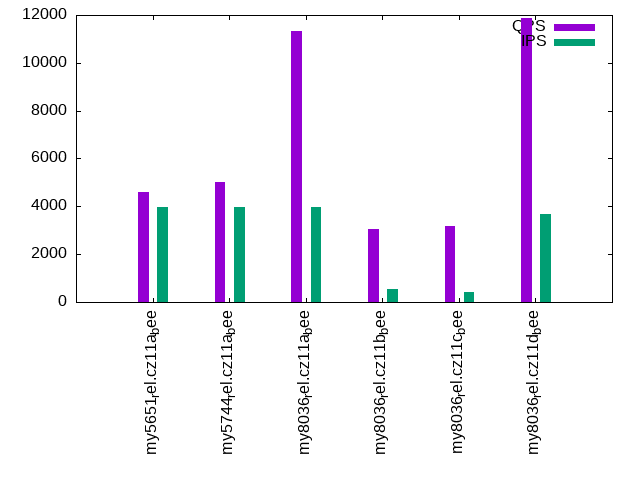
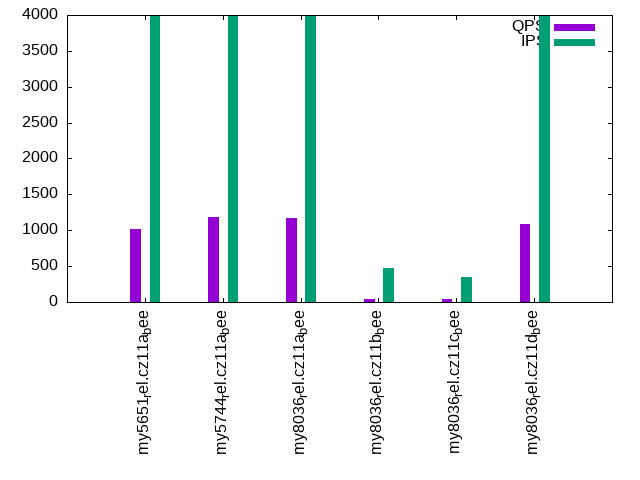

This is a report for the insert benchmark with 800M docs and 4 client(s). It is generated by scripts (bash, awk, sed) and Tufte might not be impressed. An overview of the insert benchmark is here and a short update is here. Below, by DBMS, I mean DBMS+version.config. An example is my8020.c10b40 where my means MySQL, 8020 is version 8.0.20 and c10b40 is the name for the configuration file.
The test server has 8 AMD cores, 16G RAM and an NVMe SSD. It is described here as the Beelink. The benchmark was run with 4 clients and there were 1 or 3 connections per client (1 for queries or inserts without rate limits, 1+1 for rate limited inserts+deletes). It uses 4 tables with a table per client. It loads 800M rows per table without secondary indexes, creates 3 secondary indexes per table, then inserts 2m rows per table with a delete per insert to avoid growing the table. It then does 6 read+write tests for 1800s each that do queries as fast as possible with 100,100,500,500,1000,1000 inserts/s and the same for deletes/s per client concurrent with the queries. The database is larger than memory. Clients and the DBMS share one server. The per-database configs are in the per-database subdirectories here.
The tested DBMS are:
The numbers are inserts/s for l.i0, l.i1 and l.i2, indexed docs (or rows) /s for l.x and queries/s for qr100, qp100 thru qr1000, qp1000" The values are the average rate over the entire test for inserts (IPS) and queries (QPS). The range of values for IPS and QPS is split into 3 parts: bottom 25%, middle 50%, top 25%. Values in the bottom 25% have a red background, values in the top 25% have a green background and values in the middle have no color. A gray background is used for values that can be ignored because the DBMS did not sustain the target insert rate. Red backgrounds are not used when the minimum value is within 80% of the max value.
| dbms | l.i0 | l.x | l.i1 | l.i2 | qr100 | qp100 | qr500 | qp500 | qr1000 | qp1000 |
|---|---|---|---|---|---|---|---|---|---|---|
| my5651_rel.cz11a_bee | 292077 | 212936 | 3540 | 4665 | 17082 | 2005 | 8194 | 1094 | 4592 | 1020 |
| my5744_rel.cz11a_bee | 286533 | 423504 | 4798 | 5405 | 16593 | 2332 | 13106 | 1640 | 5018 | 1185 |
| my8036_rel.cz11a_bee | 198462 | 312867 | 4594 | 4040 | 16817 | 2294 | 15331 | 1660 | 11338 | 1175 |
| my8036_rel.cz11b_bee | 181653 | 52934 | 55 | 101 | 6626 | 28 | 6498 | 37 | 3038 | 44 |
| my8036_rel.cz11c_bee | 128970 | 43900 | 44 | 81 | 6249 | 21 | 5945 | 30 | 3176 | 39 |
| my8036_rel.cz11d_bee | 199054 | 310198 | 3610 | 3532 | 16917 | 2314 | 14778 | 1669 | 11877 | 1085 |
This table has relative throughput, throughput for the DBMS relative to the DBMS in the first line, using the absolute throughput from the previous table. Values less than 0.95 have a yellow background. Values greater than 1.05 have a blue background.
| dbms | l.i0 | l.x | l.i1 | l.i2 | qr100 | qp100 | qr500 | qp500 | qr1000 | qp1000 |
|---|---|---|---|---|---|---|---|---|---|---|
| my5651_rel.cz11a_bee | 1.00 | 1.00 | 1.00 | 1.00 | 1.00 | 1.00 | 1.00 | 1.00 | 1.00 | 1.00 |
| my5744_rel.cz11a_bee | 0.98 | 1.99 | 1.36 | 1.16 | 0.97 | 1.16 | 1.60 | 1.50 | 1.09 | 1.16 |
| my8036_rel.cz11a_bee | 0.68 | 1.47 | 1.30 | 0.87 | 0.98 | 1.14 | 1.87 | 1.52 | 2.47 | 1.15 |
| my8036_rel.cz11b_bee | 0.62 | 0.25 | 0.02 | 0.02 | 0.39 | 0.01 | 0.79 | 0.03 | 0.66 | 0.04 |
| my8036_rel.cz11c_bee | 0.44 | 0.21 | 0.01 | 0.02 | 0.37 | 0.01 | 0.73 | 0.03 | 0.69 | 0.04 |
| my8036_rel.cz11d_bee | 0.68 | 1.46 | 1.02 | 0.76 | 0.99 | 1.15 | 1.80 | 1.53 | 2.59 | 1.06 |
This lists the average rate of inserts/s for the tests that do inserts concurrent with queries. For such tests the query rate is listed in the table above. The read+write tests are setup so that the insert rate should match the target rate every second. Cells that are not at least 95% of the target have a red background to indicate a failure to satisfy the target.
| dbms | qr100.L1 | qp100.L2 | qr500.L3 | qp500.L4 | qr1000.L5 | qp1000.L6 |
|---|---|---|---|---|---|---|
| my5651_rel.cz11a_bee | 399 | 399 | 1993 | 1994 | 3989 | 3987 |
| my5744_rel.cz11a_bee | 399 | 399 | 1994 | 1993 | 3989 | 3989 |
| my8036_rel.cz11a_bee | 399 | 399 | 1994 | 1994 | 3989 | 3989 |
| my8036_rel.cz11b_bee | 127 | 134 | 210 | 390 | 550 | 469 |
| my8036_rel.cz11c_bee | 100 | 100 | 156 | 257 | 406 | 352 |
| my8036_rel.cz11d_bee | 399 | 399 | 1993 | 1994 | 3700 | 3987 |
| target | 400 | 400 | 2000 | 2000 | 4000 | 4000 |
l.i0: load without secondary indexes. Graphs for performance per 1-second interval are here.
Average throughput:
Insert response time histogram: each cell has the percentage of responses that take <= the time in the header and max is the max response time in seconds. For the max column values in the top 25% of the range have a red background and in the bottom 25% of the range have a green background. The red background is not used when the min value is within 80% of the max value.
| dbms | 256us | 1ms | 4ms | 16ms | 64ms | 256ms | 1s | 4s | 16s | gt | max |
|---|---|---|---|---|---|---|---|---|---|---|---|
| my5651_rel.cz11a_bee | 0.744 | 98.688 | 0.392 | 0.169 | 0.007 | 0.191 | |||||
| my5744_rel.cz11a_bee | 0.013 | 99.433 | 0.462 | 0.085 | 0.007 | 0.176 | |||||
| my8036_rel.cz11a_bee | 99.213 | 0.663 | 0.113 | 0.011 | 0.180 | ||||||
| my8036_rel.cz11b_bee | 99.164 | 0.704 | 0.086 | 0.033 | 0.005 | 0.007 | nonzero | 33.471 | |||
| my8036_rel.cz11c_bee | 99.186 | 0.471 | 0.113 | 0.059 | 0.150 | 0.022 | 1.118 | ||||
| my8036_rel.cz11d_bee | 99.211 | 0.690 | 0.089 | 0.010 | 0.171 |
Performance metrics for the DBMS listed above. Some are normalized by throughput, others are not. Legend for results is here.
ips qps rps rmbps wps wmbps rpq rkbpq wpi wkbpi csps cpups cspq cpupq dbgb1 dbgb2 rss maxop p50 p99 tag 292077 0 2377 9.3 1448.5 105.2 0.008 0.033 0.005 0.369 36249 77.0 0.124 21 52.6 68.1 10.7 0.191 72621 60535 my5651_rel.cz11a_bee 286533 0 1 0.0 1432.1 103.2 0.000 0.000 0.005 0.369 32472 79.0 0.113 22 52.6 68.2 11.0 0.176 72269 63231 my5744_rel.cz11a_bee 198462 0 1 0.0 1199.5 75.0 0.000 0.000 0.006 0.387 23629 74.0 0.119 30 52.5 68.1 11.1 0.180 50144 43453 my8036_rel.cz11a_bee 181653 0 1 0.0 1302.9 66.0 0.000 0.000 0.007 0.372 21415 70.0 0.118 31 52.5 68.0 11.2 33.471 49464 0 my8036_rel.cz11b_bee 128970 0 0 0.0 798.2 46.9 0.000 0.000 0.006 0.372 16545 51.1 0.128 32 52.5 68.0 11.2 1.118 31957 2097 my8036_rel.cz11c_bee 199054 0 1 0.0 1203.8 75.2 0.000 0.000 0.006 0.387 23871 74.5 0.120 30 52.5 68.1 11.1 0.171 50245 43352 my8036_rel.cz11d_bee
l.x: create secondary indexes.
Average throughput:
Performance metrics for the DBMS listed above. Some are normalized by throughput, others are not. Legend for results is here.
ips qps rps rmbps wps wmbps rpq rkbpq wpi wkbpi csps cpups cspq cpupq dbgb1 dbgb2 rss maxop p50 p99 tag 212936 0 1361 188.9 1833.7 249.1 0.006 0.909 0.009 1.198 5241 38.4 0.025 14 111.5 127.0 10.9 0.003 NA NA my5651_rel.cz11a_bee 423504 0 2550 373.7 3513.0 449.7 0.006 0.904 0.008 1.087 12061 45.9 0.028 9 121.2 136.7 11.1 0.002 NA NA my5744_rel.cz11a_bee 312867 0 4946 458.9 6281.3 408.6 0.016 1.502 0.020 1.337 18931 90.2 0.061 23 120.7 136.3 11.2 0.008 NA NA my8036_rel.cz11a_bee 52934 0 836 77.5 1316.7 70.1 0.016 1.499 0.025 1.357 7135 24.5 0.135 37 120.7 136.3 11.2 0.009 NA NA my8036_rel.cz11b_bee 43900 0 552 64.4 1102.7 58.2 0.013 1.503 0.025 1.358 6673 18.8 0.152 34 120.7 136.3 10.6 0.024 NA NA my8036_rel.cz11c_bee 310198 0 4908 455.3 6272.0 405.4 0.016 1.503 0.020 1.338 18721 90.4 0.060 23 120.7 136.3 11.2 0.009 NA NA my8036_rel.cz11d_bee
l.i1: continue load after secondary indexes created with 50 inserts per transaction. Graphs for performance per 1-second interval are here.
Average throughput:
Insert response time histogram: each cell has the percentage of responses that take <= the time in the header and max is the max response time in seconds. For the max column values in the top 25% of the range have a red background and in the bottom 25% of the range have a green background. The red background is not used when the min value is within 80% of the max value.
| dbms | 256us | 1ms | 4ms | 16ms | 64ms | 256ms | 1s | 4s | 16s | gt | max |
|---|---|---|---|---|---|---|---|---|---|---|---|
| my5651_rel.cz11a_bee | 1.720 | 64.656 | 33.596 | 0.027 | 0.788 | ||||||
| my5744_rel.cz11a_bee | 11.283 | 71.025 | 17.691 | 0.001 | 0.323 | ||||||
| my8036_rel.cz11a_bee | 7.341 | 74.794 | 17.855 | 0.010 | 0.345 | ||||||
| my8036_rel.cz11b_bee | 0.636 | 0.127 | 0.268 | 63.499 | 35.470 | 10.888 | |||||
| my8036_rel.cz11c_bee | 0.023 | 0.616 | 0.084 | 47.270 | 52.007 | 14.718 | |||||
| my8036_rel.cz11d_bee | 0.010 | 65.422 | 34.562 | 0.005 | 0.464 |
Delete response time histogram: each cell has the percentage of responses that take <= the time in the header and max is the max response time in seconds. For the max column values in the top 25% of the range have a red background and in the bottom 25% of the range have a green background. The red background is not used when the min value is within 80% of the max value.
| dbms | 256us | 1ms | 4ms | 16ms | 64ms | 256ms | 1s | 4s | 16s | gt | max |
|---|---|---|---|---|---|---|---|---|---|---|---|
| my5651_rel.cz11a_bee | 12.957 | 65.575 | 21.360 | 0.106 | 0.002 | 0.344 | |||||
| my5744_rel.cz11a_bee | 67.806 | 30.735 | 1.448 | 0.010 | 0.103 | ||||||
| my8036_rel.cz11a_bee | 53.660 | 42.938 | 2.958 | 0.444 | 0.164 | ||||||
| my8036_rel.cz11b_bee | 20.566 | 1.733 | 16.733 | 36.210 | 24.486 | 0.273 | 2.319 | ||||
| my8036_rel.cz11c_bee | 5.324 | 14.836 | 7.703 | 36.480 | 35.349 | 0.307 | 3.298 | ||||
| my8036_rel.cz11d_bee | 24.547 | 67.059 | 8.393 | 0.001 | 0.330 |
Performance metrics for the DBMS listed above. Some are normalized by throughput, others are not. Legend for results is here.
ips qps rps rmbps wps wmbps rpq rkbpq wpi wkbpi csps cpups cspq cpupq dbgb1 dbgb2 rss maxop p50 p99 tag 3540 0 12981 201.4 24846.1 538.6 3.667 58.259 7.019 155.806 90397 33.0 25.537 746 157.5 174.0 10.5 0.788 750 449 my5651_rel.cz11a_bee 4798 0 18354 286.8 23589.6 741.7 3.826 61.209 4.917 158.303 116454 47.5 24.273 792 156.3 172.6 10.7 0.323 1099 549 my5744_rel.cz11a_bee 4594 0 18874 294.9 28283.7 776.1 4.108 65.727 6.156 172.972 111639 53.0 24.299 923 153.7 170.0 10.8 0.345 1099 599 my8036_rel.cz11a_bee 55 0 282 4.4 768.5 11.1 5.159 82.537 14.074 209.049 11729 3.1 214.825 4542 151.3 167.3 10.7 10.888 0 0 my8036_rel.cz11b_bee 44 0 223 4.0 737.5 9.1 5.086 93.607 16.838 212.290 12707 3.6 290.125 6575 151.0 167.0 10.6 14.718 0 0 my8036_rel.cz11c_bee 3610 0 22080 345.0 31203.9 840.9 6.117 97.870 8.644 238.544 134369 48.8 37.224 1082 144.0 159.6 10.7 0.464 944 599 my8036_rel.cz11d_bee
l.i2: continue load after secondary indexes created with 5 inserts per transaction. Graphs for performance per 1-second interval are here.
Average throughput:
Insert response time histogram: each cell has the percentage of responses that take <= the time in the header and max is the max response time in seconds. For the max column values in the top 25% of the range have a red background and in the bottom 25% of the range have a green background. The red background is not used when the min value is within 80% of the max value.
| dbms | 256us | 1ms | 4ms | 16ms | 64ms | 256ms | 1s | 4s | 16s | gt | max |
|---|---|---|---|---|---|---|---|---|---|---|---|
| my5651_rel.cz11a_bee | 11.064 | 53.145 | 34.187 | 1.599 | 0.005 | 0.101 | |||||
| my5744_rel.cz11a_bee | 9.545 | 65.633 | 23.439 | 1.382 | 0.001 | 0.068 | |||||
| my8036_rel.cz11a_bee | 1.999 | 65.667 | 29.521 | 2.192 | 0.622 | 0.210 | |||||
| my8036_rel.cz11b_bee | 2.649 | 3.429 | 1.112 | 11.481 | 52.513 | 28.803 | 0.011 | 1.272 | |||
| my8036_rel.cz11c_bee | 1.433 | 5.199 | 1.511 | 8.823 | 44.102 | 38.473 | 0.459 | 1.809 | |||
| my8036_rel.cz11d_bee | 61.135 | 35.541 | 2.882 | 0.443 | 0.119 |
Delete response time histogram: each cell has the percentage of responses that take <= the time in the header and max is the max response time in seconds. For the max column values in the top 25% of the range have a red background and in the bottom 25% of the range have a green background. The red background is not used when the min value is within 80% of the max value.
| dbms | 256us | 1ms | 4ms | 16ms | 64ms | 256ms | 1s | 4s | 16s | gt | max |
|---|---|---|---|---|---|---|---|---|---|---|---|
| my5651_rel.cz11a_bee | 20.069 | 60.684 | 18.446 | 0.800 | 0.002 | 0.084 | |||||
| my5744_rel.cz11a_bee | 38.707 | 54.173 | 6.921 | 0.198 | 0.001 | 0.064 | |||||
| my8036_rel.cz11a_bee | 18.626 | 74.337 | 6.059 | 0.529 | 0.449 | 0.207 | |||||
| my8036_rel.cz11b_bee | 23.380 | 36.482 | 4.364 | 21.924 | 13.675 | 0.153 | 0.022 | 1.915 | |||
| my8036_rel.cz11c_bee | 13.402 | 40.672 | 5.800 | 21.106 | 18.476 | 0.525 | 0.018 | 2.743 | |||
| my8036_rel.cz11d_bee | 0.001 | 71.793 | 26.085 | 1.764 | 0.357 | 0.145 |
Performance metrics for the DBMS listed above. Some are normalized by throughput, others are not. Legend for results is here.
ips qps rps rmbps wps wmbps rpq rkbpq wpi wkbpi csps cpups cspq cpupq dbgb1 dbgb2 rss maxop p50 p99 tag 4665 0 10823 155.4 17262.7 402.4 2.320 34.122 3.701 88.329 86945 50.2 18.639 861 158.6 175.6 10.5 0.101 1164 904 my5651_rel.cz11a_bee 5405 0 13421 209.7 17865.7 552.3 2.483 39.727 3.305 104.619 102226 62.2 18.912 921 156.8 173.7 10.7 0.068 1359 1090 my5744_rel.cz11a_bee 4040 0 15058 235.3 22662.7 600.1 3.727 59.629 5.609 152.095 97580 63.3 24.151 1253 153.7 170.2 10.8 0.210 1009 614 my8036_rel.cz11a_bee 101 0 295 4.6 799.6 11.6 2.930 46.880 7.933 117.581 6204 5.7 61.549 4524 154.1 170.2 10.8 1.272 25 10 my8036_rel.cz11b_bee 81 0 232 4.6 762.8 9.5 2.875 58.099 9.463 120.761 7012 6.8 87.002 6749 153.8 169.9 8.3 1.809 20 5 my8036_rel.cz11c_bee 3532 0 19754 308.7 27187.5 710.6 5.593 89.487 7.697 206.013 121212 52.0 34.318 1178 144.0 159.6 10.7 0.119 904 655 my8036_rel.cz11d_bee
qr100.L1: range queries with 100 insert/s per client. Graphs for performance per 1-second interval are here.
Average throughput:
Query response time histogram: each cell has the percentage of responses that take <= the time in the header and max is the max response time in seconds. For max values in the top 25% of the range have a red background and in the bottom 25% of the range have a green background. The red background is not used when the min value is within 80% of the max value.
| dbms | 256us | 1ms | 4ms | 16ms | 64ms | 256ms | 1s | 4s | 16s | gt | max |
|---|---|---|---|---|---|---|---|---|---|---|---|
| my5651_rel.cz11a_bee | 89.659 | 8.564 | 1.554 | 0.222 | 0.002 | nonzero | 0.070 | ||||
| my5744_rel.cz11a_bee | 83.500 | 15.710 | 0.646 | 0.143 | 0.002 | 0.058 | |||||
| my8036_rel.cz11a_bee | 76.133 | 23.738 | 0.125 | 0.004 | nonzero | 0.034 | |||||
| my8036_rel.cz11b_bee | 38.357 | 57.869 | 3.103 | 0.226 | 0.382 | 0.057 | 0.007 | nonzero | 1.364 | ||
| my8036_rel.cz11c_bee | 40.723 | 55.571 | 3.059 | 0.200 | 0.344 | 0.095 | 0.008 | nonzero | 1.422 | ||
| my8036_rel.cz11d_bee | 75.114 | 24.838 | 0.043 | 0.005 | nonzero | 0.028 |
Insert response time histogram: each cell has the percentage of responses that take <= the time in the header and max is the max response time in seconds. For max values in the top 25% of the range have a red background and in the bottom 25% of the range have a green background. The red background is not used when the min value is within 80% of the max value.
| dbms | 256us | 1ms | 4ms | 16ms | 64ms | 256ms | 1s | 4s | 16s | gt | max |
|---|---|---|---|---|---|---|---|---|---|---|---|
| my5651_rel.cz11a_bee | 0.160 | 88.181 | 11.660 | 0.149 | |||||||
| my5744_rel.cz11a_bee | 9.507 | 83.271 | 7.222 | 0.177 | |||||||
| my8036_rel.cz11a_bee | 0.438 | 96.458 | 3.104 | 0.185 | |||||||
| my8036_rel.cz11b_bee | 12.403 | 87.583 | 0.014 | 4.280 | |||||||
| my8036_rel.cz11c_bee | 0.021 | 6.729 | 91.361 | 1.889 | 5.680 | ||||||
| my8036_rel.cz11d_bee | 0.104 | 99.090 | 0.806 | 0.153 |
Delete response time histogram: each cell has the percentage of responses that take <= the time in the header and max is the max response time in seconds. For max values in the top 25% of the range have a red background and in the bottom 25% of the range have a green background. The red background is not used when the min value is within 80% of the max value.
| dbms | 256us | 1ms | 4ms | 16ms | 64ms | 256ms | 1s | 4s | 16s | gt | max |
|---|---|---|---|---|---|---|---|---|---|---|---|
| my5651_rel.cz11a_bee | 40.951 | 49.188 | 9.840 | 0.021 | 0.077 | ||||||
| my5744_rel.cz11a_bee | 88.931 | 10.312 | 0.750 | 0.007 | 0.071 | ||||||
| my8036_rel.cz11a_bee | 90.014 | 9.229 | 0.556 | 0.201 | 0.110 | ||||||
| my8036_rel.cz11b_bee | 12.028 | 1.292 | 13.896 | 46.299 | 26.472 | 0.014 | 1.089 | ||||
| my8036_rel.cz11c_bee | 2.819 | 7.778 | 5.590 | 41.417 | 42.354 | 0.042 | 1.208 | ||||
| my8036_rel.cz11d_bee | 46.799 | 52.743 | 0.458 | 0.130 |
Performance metrics for the DBMS listed above. Some are normalized by throughput, others are not. Legend for results is here.
ips qps rps rmbps wps wmbps rpq rkbpq wpi wkbpi csps cpups cspq cpupq dbgb1 dbgb2 rss maxop p50 p99 tag 399 17082 7371 115.0 10759.6 226.4 0.432 6.893 26.980 581.360 102641 50.4 6.009 236 158.6 175.6 10.5 0.070 3788 784 my5651_rel.cz11a_bee 399 16593 5432 84.9 6230.7 181.2 0.327 5.237 15.624 465.350 89916 54.5 5.419 263 156.8 173.7 10.7 0.058 4491 1055 my5744_rel.cz11a_bee 399 16817 3403 53.2 4924.2 127.9 0.202 3.237 12.348 328.352 78626 56.3 4.676 268 153.7 170.2 10.8 0.034 4251 3181 my8036_rel.cz11a_bee 127 6626 330 5.1 852.5 12.2 0.050 0.795 6.702 98.153 31910 36.3 4.815 438 155.2 171.4 10.8 1.364 1759 48 my8036_rel.cz11b_bee 100 6249 245 4.9 780.0 9.7 0.039 0.811 7.839 99.931 30694 35.4 4.912 453 155.0 171.3 8.7 1.422 1550 32 my8036_rel.cz11c_bee 399 16917 2215 34.6 2881.9 75.2 0.131 2.095 7.226 192.991 74228 53.6 4.388 253 144.0 159.6 10.8 0.028 4237 3516 my8036_rel.cz11d_bee
qp100.L2: point queries with 100 insert/s per client. Graphs for performance per 1-second interval are here.
Average throughput:
Query response time histogram: each cell has the percentage of responses that take <= the time in the header and max is the max response time in seconds. For max values in the top 25% of the range have a red background and in the bottom 25% of the range have a green background. The red background is not used when the min value is within 80% of the max value.
| dbms | 256us | 1ms | 4ms | 16ms | 64ms | 256ms | 1s | 4s | 16s | gt | max |
|---|---|---|---|---|---|---|---|---|---|---|---|
| my5651_rel.cz11a_bee | 0.259 | 97.159 | 2.574 | 0.007 | 0.045 | ||||||
| my5744_rel.cz11a_bee | 0.416 | 97.669 | 1.909 | 0.006 | 0.043 | ||||||
| my8036_rel.cz11a_bee | 0.187 | 98.150 | 1.652 | 0.011 | 0.053 | ||||||
| my8036_rel.cz11b_bee | 0.886 | 0.788 | 12.912 | 76.021 | 9.393 | 0.712 | |||||
| my8036_rel.cz11c_bee | 1.301 | 1.060 | 7.739 | 65.883 | 24.017 | 0.888 | |||||
| my8036_rel.cz11d_bee | 0.190 | 98.366 | 1.431 | 0.014 | 0.052 |
Insert response time histogram: each cell has the percentage of responses that take <= the time in the header and max is the max response time in seconds. For max values in the top 25% of the range have a red background and in the bottom 25% of the range have a green background. The red background is not used when the min value is within 80% of the max value.
| dbms | 256us | 1ms | 4ms | 16ms | 64ms | 256ms | 1s | 4s | 16s | gt | max |
|---|---|---|---|---|---|---|---|---|---|---|---|
| my5651_rel.cz11a_bee | 2.000 | 97.799 | 0.201 | 0.087 | |||||||
| my5744_rel.cz11a_bee | 24.722 | 75.215 | 0.062 | 0.076 | |||||||
| my8036_rel.cz11a_bee | 6.438 | 93.458 | 0.104 | 0.122 | |||||||
| my8036_rel.cz11b_bee | 0.007 | 0.049 | 15.931 | 83.965 | 0.049 | 4.346 | |||||
| my8036_rel.cz11c_bee | 0.035 | 3.931 | 94.660 | 1.375 | 6.710 | ||||||
| my8036_rel.cz11d_bee | 0.069 | 99.812 | 0.118 | 0.139 |
Delete response time histogram: each cell has the percentage of responses that take <= the time in the header and max is the max response time in seconds. For max values in the top 25% of the range have a red background and in the bottom 25% of the range have a green background. The red background is not used when the min value is within 80% of the max value.
| dbms | 256us | 1ms | 4ms | 16ms | 64ms | 256ms | 1s | 4s | 16s | gt | max |
|---|---|---|---|---|---|---|---|---|---|---|---|
| my5651_rel.cz11a_bee | 64.389 | 32.778 | 2.833 | 0.037 | |||||||
| my5744_rel.cz11a_bee | 89.889 | 10.076 | 0.035 | 0.026 | |||||||
| my8036_rel.cz11a_bee | 85.812 | 14.069 | 0.090 | 0.028 | 0.111 | ||||||
| my8036_rel.cz11b_bee | 5.910 | 9.361 | 12.556 | 27.417 | 43.493 | 1.264 | 1.956 | ||||
| my8036_rel.cz11c_bee | 0.188 | 9.118 | 3.639 | 19.736 | 64.347 | 2.972 | 2.433 | ||||
| my8036_rel.cz11d_bee | 22.611 | 77.347 | 0.042 | 0.121 |
Performance metrics for the DBMS listed above. Some are normalized by throughput, others are not. Legend for results is here.
ips qps rps rmbps wps wmbps rpq rkbpq wpi wkbpi csps cpups cspq cpupq dbgb1 dbgb2 rss maxop p50 p99 tag 399 2005 20097 313.8 3302.2 99.7 10.025 160.303 8.280 256.053 57763 24.9 28.812 994 158.6 175.6 10.5 0.045 496 447 my5651_rel.cz11a_bee 399 2332 22732 355.2 3743.2 99.1 9.750 156.000 9.386 254.374 66996 21.1 28.735 724 156.8 173.7 10.7 0.043 591 543 my5744_rel.cz11a_bee 399 2294 22307 348.5 3984.4 103.4 9.724 155.582 9.991 265.399 63119 23.1 27.515 806 153.7 170.2 10.8 0.053 575 543 my8036_rel.cz11a_bee 134 28 582 9.1 878.8 12.8 21.183 338.921 6.544 97.507 7016 5.8 255.144 16873 156.5 172.9 10.8 0.712 0 0 my8036_rel.cz11b_bee 100 21 432 8.1 794.3 9.8 20.647 398.772 7.919 100.450 7622 5.4 364.687 20670 156.3 172.7 8.6 0.888 0 0 my8036_rel.cz11c_bee 399 2314 22326 348.8 3722.4 95.8 9.650 154.400 9.334 245.909 62831 22.0 27.157 761 144.0 159.6 10.8 0.052 576 543 my8036_rel.cz11d_bee
qr500.L3: range queries with 500 insert/s per client. Graphs for performance per 1-second interval are here.
Average throughput:
Query response time histogram: each cell has the percentage of responses that take <= the time in the header and max is the max response time in seconds. For max values in the top 25% of the range have a red background and in the bottom 25% of the range have a green background. The red background is not used when the min value is within 80% of the max value.
| dbms | 256us | 1ms | 4ms | 16ms | 64ms | 256ms | 1s | 4s | 16s | gt | max |
|---|---|---|---|---|---|---|---|---|---|---|---|
| my5651_rel.cz11a_bee | 73.482 | 17.127 | 7.476 | 1.899 | 0.016 | nonzero | 0.065 | ||||
| my5744_rel.cz11a_bee | 80.898 | 16.208 | 2.394 | 0.493 | 0.007 | nonzero | 0.071 | ||||
| my8036_rel.cz11a_bee | 69.920 | 29.769 | 0.292 | 0.018 | nonzero | 0.045 | |||||
| my8036_rel.cz11b_bee | 37.780 | 58.253 | 3.320 | 0.259 | 0.328 | 0.057 | 0.005 | 0.648 | |||
| my8036_rel.cz11c_bee | 39.160 | 56.899 | 3.244 | 0.246 | 0.355 | 0.090 | 0.007 | 0.943 | |||
| my8036_rel.cz11d_bee | 66.799 | 32.620 | 0.534 | 0.046 | 0.001 | 0.042 |
Insert response time histogram: each cell has the percentage of responses that take <= the time in the header and max is the max response time in seconds. For max values in the top 25% of the range have a red background and in the bottom 25% of the range have a green background. The red background is not used when the min value is within 80% of the max value.
| dbms | 256us | 1ms | 4ms | 16ms | 64ms | 256ms | 1s | 4s | 16s | gt | max |
|---|---|---|---|---|---|---|---|---|---|---|---|
| my5651_rel.cz11a_bee | 2.151 | 82.903 | 14.946 | 0.197 | |||||||
| my5744_rel.cz11a_bee | 16.782 | 81.703 | 1.515 | 0.127 | |||||||
| my8036_rel.cz11a_bee | 6.663 | 89.565 | 3.772 | 0.233 | |||||||
| my8036_rel.cz11b_bee | 0.001 | 0.004 | 0.032 | 1.746 | 58.232 | 39.985 | 3.263 | ||||
| my8036_rel.cz11c_bee | 0.008 | 0.017 | 0.682 | 38.417 | 60.804 | 0.072 | 5.487 | ||||
| my8036_rel.cz11d_bee | 3.667 | 90.169 | 6.164 | 0.198 |
Delete response time histogram: each cell has the percentage of responses that take <= the time in the header and max is the max response time in seconds. For max values in the top 25% of the range have a red background and in the bottom 25% of the range have a green background. The red background is not used when the min value is within 80% of the max value.
| dbms | 256us | 1ms | 4ms | 16ms | 64ms | 256ms | 1s | 4s | 16s | gt | max |
|---|---|---|---|---|---|---|---|---|---|---|---|
| my5651_rel.cz11a_bee | 33.011 | 54.674 | 12.253 | 0.062 | 0.098 | ||||||
| my5744_rel.cz11a_bee | 86.469 | 12.912 | 0.618 | 0.051 | |||||||
| my8036_rel.cz11a_bee | 68.396 | 29.039 | 1.638 | 0.928 | 0.134 | ||||||
| my8036_rel.cz11b_bee | 13.732 | 3.343 | 15.228 | 46.565 | 21.126 | 0.006 | 1.334 | ||||
| my8036_rel.cz11c_bee | 3.931 | 7.636 | 5.317 | 42.418 | 40.617 | 0.082 | 1.678 | ||||
| my8036_rel.cz11d_bee | 29.750 | 67.536 | 2.714 | 0.178 |
Performance metrics for the DBMS listed above. Some are normalized by throughput, others are not. Legend for results is here.
ips qps rps rmbps wps wmbps rpq rkbpq wpi wkbpi csps cpups cspq cpupq dbgb1 dbgb2 rss maxop p50 p99 tag 1993 8194 14656 228.2 21897.5 400.2 1.789 28.518 10.986 205.614 106166 47.8 12.957 467 158.6 175.6 10.5 0.065 2111 799 my5651_rel.cz11a_bee 1994 13106 14212 222.1 13713.7 411.8 1.084 17.350 6.876 211.430 109978 59.8 8.392 365 156.8 173.7 10.7 0.071 3404 1439 my5744_rel.cz11a_bee 1994 15331 10925 170.7 14939.5 389.7 0.713 11.402 7.491 200.074 100169 71.7 6.534 374 153.7 170.2 10.8 0.045 3837 3324 my8036_rel.cz11a_bee 210 6498 309 4.8 848.4 12.4 0.048 0.761 4.032 60.479 30847 38.5 4.747 474 161.8 179.2 10.8 0.648 1694 368 my8036_rel.cz11b_bee 156 5945 224 5.0 763.7 9.8 0.038 0.857 4.908 64.456 29289 37.0 4.927 498 161.6 179.0 9.0 0.943 1390 256 my8036_rel.cz11c_bee 1993 14778 10805 168.8 14768.5 381.6 0.731 11.698 7.409 196.025 106188 67.1 7.185 363 144.0 159.6 10.8 0.042 3694 3117 my8036_rel.cz11d_bee
qp500.L4: point queries with 500 insert/s per client. Graphs for performance per 1-second interval are here.
Average throughput:
Query response time histogram: each cell has the percentage of responses that take <= the time in the header and max is the max response time in seconds. For max values in the top 25% of the range have a red background and in the bottom 25% of the range have a green background. The red background is not used when the min value is within 80% of the max value.
| dbms | 256us | 1ms | 4ms | 16ms | 64ms | 256ms | 1s | 4s | 16s | gt | max |
|---|---|---|---|---|---|---|---|---|---|---|---|
| my5651_rel.cz11a_bee | 0.002 | 61.484 | 38.450 | 0.065 | nonzero | 0.078 | |||||
| my5744_rel.cz11a_bee | 0.017 | 87.419 | 12.522 | 0.042 | 0.052 | ||||||
| my8036_rel.cz11a_bee | 0.006 | 90.075 | 9.829 | 0.090 | nonzero | 0.078 | |||||
| my8036_rel.cz11b_bee | 2.985 | 2.219 | 27.114 | 64.648 | 3.034 | 0.845 | |||||
| my8036_rel.cz11c_bee | 4.463 | 3.682 | 20.448 | 60.499 | 10.907 | 0.809 | |||||
| my8036_rel.cz11d_bee | 0.006 | 90.934 | 8.875 | 0.186 | nonzero | 0.073 |
Insert response time histogram: each cell has the percentage of responses that take <= the time in the header and max is the max response time in seconds. For max values in the top 25% of the range have a red background and in the bottom 25% of the range have a green background. The red background is not used when the min value is within 80% of the max value.
| dbms | 256us | 1ms | 4ms | 16ms | 64ms | 256ms | 1s | 4s | 16s | gt | max |
|---|---|---|---|---|---|---|---|---|---|---|---|
| my5651_rel.cz11a_bee | 2.292 | 67.579 | 30.129 | 0.231 | |||||||
| my5744_rel.cz11a_bee | 27.396 | 71.964 | 0.640 | 0.121 | |||||||
| my8036_rel.cz11a_bee | 7.639 | 90.569 | 1.792 | 0.171 | |||||||
| my8036_rel.cz11b_bee | 0.018 | 2.457 | 3.772 | 23.106 | 61.479 | 9.167 | 0.001 | 4.040 | |||
| my8036_rel.cz11c_bee | 0.019 | 2.865 | 1.172 | 11.561 | 56.200 | 28.171 | 0.011 | 5.113 | |||
| my8036_rel.cz11d_bee | 0.340 | 90.818 | 8.842 | 0.180 |
Delete response time histogram: each cell has the percentage of responses that take <= the time in the header and max is the max response time in seconds. For max values in the top 25% of the range have a red background and in the bottom 25% of the range have a green background. The red background is not used when the min value is within 80% of the max value.
| dbms | 256us | 1ms | 4ms | 16ms | 64ms | 256ms | 1s | 4s | 16s | gt | max |
|---|---|---|---|---|---|---|---|---|---|---|---|
| my5651_rel.cz11a_bee | 37.896 | 50.774 | 11.306 | 0.025 | 0.105 | ||||||
| my5744_rel.cz11a_bee | 90.604 | 9.175 | 0.221 | 0.045 | |||||||
| my8036_rel.cz11a_bee | 73.218 | 25.918 | 0.379 | 0.485 | 0.115 | ||||||
| my8036_rel.cz11b_bee | 0.342 | 23.468 | 16.137 | 34.400 | 24.049 | 1.603 | 0.001 | 4.046 | |||
| my8036_rel.cz11c_bee | 0.082 | 18.029 | 5.083 | 26.742 | 45.310 | 4.754 | 3.184 | ||||
| my8036_rel.cz11d_bee | 5.844 | 91.010 | 3.146 | 0.174 |
Performance metrics for the DBMS listed above. Some are normalized by throughput, others are not. Legend for results is here.
ips qps rps rmbps wps wmbps rpq rkbpq wpi wkbpi csps cpups cspq cpupq dbgb1 dbgb2 rss maxop p50 p99 tag 1994 1094 21458 334.5 22621.6 371.9 19.621 313.171 11.343 190.962 94887 40.9 86.765 2992 158.6 175.6 10.5 0.078 272 240 my5651_rel.cz11a_bee 1993 1640 26692 417.1 13755.0 387.6 16.271 260.343 6.901 199.130 105473 34.0 64.297 1658 156.8 173.7 10.7 0.052 416 336 my5744_rel.cz11a_bee 1994 1660 26881 420.0 15491.0 399.8 16.192 259.064 7.767 205.274 98233 38.7 59.169 1865 153.7 170.2 10.8 0.078 416 368 my8036_rel.cz11a_bee 390 37 651 10.2 861.0 13.0 17.594 281.501 2.207 34.239 12725 5.9 343.912 12757 164.7 183.8 10.8 0.845 16 0 my8036_rel.cz11b_bee 257 30 487 10.2 740.4 9.9 15.961 343.664 2.885 39.642 12131 5.9 397.723 15475 164.5 183.4 9.0 0.809 0 0 my8036_rel.cz11c_bee 1994 1669 27032 422.4 15461.4 397.8 16.200 259.193 7.752 204.226 98827 36.3 59.224 1740 144.0 159.6 10.8 0.073 416 384 my8036_rel.cz11d_bee
qr1000.L5: range queries with 1000 insert/s per client. Graphs for performance per 1-second interval are here.
Average throughput:
Query response time histogram: each cell has the percentage of responses that take <= the time in the header and max is the max response time in seconds. For max values in the top 25% of the range have a red background and in the bottom 25% of the range have a green background. The red background is not used when the min value is within 80% of the max value.
| dbms | 256us | 1ms | 4ms | 16ms | 64ms | 256ms | 1s | 4s | 16s | gt | max |
|---|---|---|---|---|---|---|---|---|---|---|---|
| my5651_rel.cz11a_bee | 53.651 | 26.866 | 13.721 | 5.716 | 0.046 | nonzero | 0.075 | ||||
| my5744_rel.cz11a_bee | 45.733 | 37.056 | 12.498 | 4.673 | 0.039 | nonzero | 0.068 | ||||
| my8036_rel.cz11a_bee | 48.035 | 49.091 | 2.713 | 0.156 | 0.005 | nonzero | 0.101 | ||||
| my8036_rel.cz11b_bee | 28.284 | 55.960 | 14.317 | 0.627 | 0.489 | 0.281 | 0.043 | nonzero | 3.681 | ||
| my8036_rel.cz11c_bee | 31.418 | 54.014 | 13.200 | 0.575 | 0.503 | 0.248 | 0.042 | nonzero | nonzero | 4.760 | |
| my8036_rel.cz11d_bee | 46.308 | 52.085 | 1.572 | 0.030 | 0.005 | 0.053 |
Insert response time histogram: each cell has the percentage of responses that take <= the time in the header and max is the max response time in seconds. For max values in the top 25% of the range have a red background and in the bottom 25% of the range have a green background. The red background is not used when the min value is within 80% of the max value.
| dbms | 256us | 1ms | 4ms | 16ms | 64ms | 256ms | 1s | 4s | 16s | gt | max |
|---|---|---|---|---|---|---|---|---|---|---|---|
| my5651_rel.cz11a_bee | 3.374 | 90.203 | 6.423 | 0.192 | |||||||
| my5744_rel.cz11a_bee | 8.190 | 90.835 | 0.976 | 0.139 | |||||||
| my8036_rel.cz11a_bee | 4.340 | 88.696 | 6.965 | 0.242 | |||||||
| my8036_rel.cz11b_bee | 0.472 | 6.148 | 7.848 | 33.906 | 46.297 | 5.322 | 0.009 | 5.600 | |||
| my8036_rel.cz11c_bee | 0.215 | 6.040 | 2.346 | 21.593 | 61.214 | 8.578 | 0.013 | 5.201 | |||
| my8036_rel.cz11d_bee | 0.012 | 72.845 | 27.143 | 0.214 |
Delete response time histogram: each cell has the percentage of responses that take <= the time in the header and max is the max response time in seconds. For max values in the top 25% of the range have a red background and in the bottom 25% of the range have a green background. The red background is not used when the min value is within 80% of the max value.
| dbms | 256us | 1ms | 4ms | 16ms | 64ms | 256ms | 1s | 4s | 16s | gt | max |
|---|---|---|---|---|---|---|---|---|---|---|---|
| my5651_rel.cz11a_bee | 33.590 | 56.477 | 9.883 | 0.049 | 0.151 | ||||||
| my5744_rel.cz11a_bee | 82.301 | 17.024 | 0.672 | 0.003 | 0.078 | ||||||
| my8036_rel.cz11a_bee | 39.001 | 50.431 | 9.679 | 0.889 | 0.144 | ||||||
| my8036_rel.cz11b_bee | 3.174 | 14.128 | 13.775 | 35.203 | 30.246 | 3.469 | 0.005 | 6.922 | |||
| my8036_rel.cz11c_bee | 2.415 | 12.197 | 4.658 | 29.698 | 46.691 | 4.338 | 0.004 | 4.839 | |||
| my8036_rel.cz11d_bee | 5.112 | 88.717 | 6.171 | 0.199 |
Performance metrics for the DBMS listed above. Some are normalized by throughput, others are not. Legend for results is here.
ips qps rps rmbps wps wmbps rpq rkbpq wpi wkbpi csps cpups cspq cpupq dbgb1 dbgb2 rss maxop p50 p99 tag 3989 4592 16477 255.9 25404.6 446.4 3.588 57.067 6.369 114.590 103731 48.4 22.589 843 158.6 175.6 10.5 0.075 1167 559 my5651_rel.cz11a_bee 3989 5018 24910 389.2 22179.7 669.5 4.964 79.417 5.560 171.879 135373 57.5 26.975 917 156.8 173.7 10.7 0.068 1263 991 my5744_rel.cz11a_bee 3989 11338 15280 238.8 21845.1 565.3 1.348 21.562 5.476 145.126 99647 83.4 8.788 588 153.7 170.2 10.8 0.101 2845 2206 my8036_rel.cz11a_bee 550 3038 290 4.5 826.9 12.7 0.095 1.526 1.503 23.654 20288 28.1 6.677 740 166.7 187.6 10.8 3.681 671 48 my8036_rel.cz11b_bee 406 3176 177 6.6 710.9 10.2 0.056 2.140 1.749 25.660 21919 30.3 6.902 763 166.6 187.6 9.7 4.760 655 64 my8036_rel.cz11c_bee 3700 11877 19356 302.4 26445.6 674.4 1.630 26.075 7.148 186.658 123513 83.9 10.399 565 144.0 159.6 10.8 0.053 2989 2206 my8036_rel.cz11d_bee
qp1000.L6: point queries with 1000 insert/s per client. Graphs for performance per 1-second interval are here.
Average throughput:
Query response time histogram: each cell has the percentage of responses that take <= the time in the header and max is the max response time in seconds. For max values in the top 25% of the range have a red background and in the bottom 25% of the range have a green background. The red background is not used when the min value is within 80% of the max value.
| dbms | 256us | 1ms | 4ms | 16ms | 64ms | 256ms | 1s | 4s | 16s | gt | max |
|---|---|---|---|---|---|---|---|---|---|---|---|
| my5651_rel.cz11a_bee | 0.007 | 60.609 | 39.308 | 0.077 | nonzero | 0.076 | |||||
| my5744_rel.cz11a_bee | 0.001 | 70.119 | 29.772 | 0.108 | nonzero | 0.077 | |||||
| my8036_rel.cz11a_bee | nonzero | 75.266 | 24.541 | 0.192 | nonzero | 0.071 | |||||
| my8036_rel.cz11b_bee | nonzero | 5.572 | 3.245 | 33.197 | 56.530 | 1.454 | 0.911 | ||||
| my8036_rel.cz11c_bee | 7.955 | 6.595 | 27.845 | 50.809 | 6.797 | 0.938 | |||||
| my8036_rel.cz11d_bee | nonzero | 71.472 | 28.285 | 0.242 | nonzero | 0.076 |
Insert response time histogram: each cell has the percentage of responses that take <= the time in the header and max is the max response time in seconds. For max values in the top 25% of the range have a red background and in the bottom 25% of the range have a green background. The red background is not used when the min value is within 80% of the max value.
| dbms | 256us | 1ms | 4ms | 16ms | 64ms | 256ms | 1s | 4s | 16s | gt | max |
|---|---|---|---|---|---|---|---|---|---|---|---|
| my5651_rel.cz11a_bee | 16.567 | 76.758 | 6.676 | 0.225 | |||||||
| my5744_rel.cz11a_bee | 13.566 | 85.758 | 0.676 | 0.120 | |||||||
| my8036_rel.cz11a_bee | 11.242 | 85.933 | 2.825 | 0.208 | |||||||
| my8036_rel.cz11b_bee | 0.022 | 4.359 | 14.888 | 32.517 | 39.649 | 8.248 | 0.315 | 0.001 | 17.056 | ||
| my8036_rel.cz11c_bee | 0.194 | 21.438 | 4.740 | 21.160 | 33.935 | 18.194 | 0.339 | 8.995 | |||
| my8036_rel.cz11d_bee | 0.119 | 79.885 | 19.996 | 0.200 |
Delete response time histogram: each cell has the percentage of responses that take <= the time in the header and max is the max response time in seconds. For max values in the top 25% of the range have a red background and in the bottom 25% of the range have a green background. The red background is not used when the min value is within 80% of the max value.
| dbms | 256us | 1ms | 4ms | 16ms | 64ms | 256ms | 1s | 4s | 16s | gt | max |
|---|---|---|---|---|---|---|---|---|---|---|---|
| my5651_rel.cz11a_bee | 6.872 | 73.150 | 19.875 | 0.103 | 0.117 | ||||||
| my5744_rel.cz11a_bee | 78.545 | 20.840 | 0.611 | 0.003 | 0.079 | ||||||
| my8036_rel.cz11a_bee | 22.451 | 73.477 | 3.430 | 0.642 | 0.207 | ||||||
| my8036_rel.cz11b_bee | 0.026 | 3.867 | 16.613 | 35.267 | 36.744 | 7.208 | 0.274 | 0.001 | 19.029 | ||
| my8036_rel.cz11c_bee | 0.011 | 19.452 | 6.154 | 24.168 | 33.221 | 16.695 | 0.299 | 8.245 | |||
| my8036_rel.cz11d_bee | 2.951 | 91.323 | 5.726 | 0.175 |
Performance metrics for the DBMS listed above. Some are normalized by throughput, others are not. Legend for results is here.
ips qps rps rmbps wps wmbps rpq rkbpq wpi wkbpi csps cpups cspq cpupq dbgb1 dbgb2 rss maxop p50 p99 tag 3987 1020 19903 309.4 21095.5 356.3 19.523 310.791 5.291 91.528 90711 47.9 88.976 3759 158.6 175.9 10.5 0.076 256 224 my5651_rel.cz11a_bee 3989 1185 30008 468.9 21227.9 628.6 25.331 405.301 5.322 161.371 134029 48.8 113.143 3296 156.8 173.7 10.7 0.077 304 256 my5744_rel.cz11a_bee 3989 1175 28609 447.0 23282.0 600.8 24.342 389.468 5.837 154.228 110497 57.5 94.016 3914 153.7 170.2 10.8 0.071 288 256 my8036_rel.cz11a_bee 469 44 726 11.3 840.5 12.8 16.496 263.929 1.791 27.816 11216 6.7 254.901 12182 167.5 188.9 10.8 0.911 16 0 my8036_rel.cz11b_bee 352 39 542 13.5 713.5 9.9 13.960 355.976 2.029 28.911 11384 6.7 293.394 13814 167.5 188.9 9.5 0.938 16 0 my8036_rel.cz11c_bee 3987 1085 31958 499.3 28240.5 723.0 29.451 471.218 7.084 185.718 132319 54.4 121.942 4011 144.0 159.6 10.8 0.076 272 240 my8036_rel.cz11d_bee
l.i0: load without secondary indexes
Performance metrics for all DBMS, not just the ones listed above. Some are normalized by throughput, others are not. Legend for results is here.
ips qps rps rmbps wps wmbps rpq rkbpq wpi wkbpi csps cpups cspq cpupq dbgb1 dbgb2 rss maxop p50 p99 tag 292077 0 2377 9.3 1448.5 105.2 0.008 0.033 0.005 0.369 36249 77.0 0.124 21 52.6 68.1 10.7 0.191 72621 60535 my5651_rel.cz11a_bee 286533 0 1 0.0 1432.1 103.2 0.000 0.000 0.005 0.369 32472 79.0 0.113 22 52.6 68.2 11.0 0.176 72269 63231 my5744_rel.cz11a_bee 198462 0 1 0.0 1199.5 75.0 0.000 0.000 0.006 0.387 23629 74.0 0.119 30 52.5 68.1 11.1 0.180 50144 43453 my8036_rel.cz11a_bee 181653 0 1 0.0 1302.9 66.0 0.000 0.000 0.007 0.372 21415 70.0 0.118 31 52.5 68.0 11.2 33.471 49464 0 my8036_rel.cz11b_bee 128970 0 0 0.0 798.2 46.9 0.000 0.000 0.006 0.372 16545 51.1 0.128 32 52.5 68.0 11.2 1.118 31957 2097 my8036_rel.cz11c_bee 199054 0 1 0.0 1203.8 75.2 0.000 0.000 0.006 0.387 23871 74.5 0.120 30 52.5 68.1 11.1 0.171 50245 43352 my8036_rel.cz11d_bee
l.x: create secondary indexes
Performance metrics for all DBMS, not just the ones listed above. Some are normalized by throughput, others are not. Legend for results is here.
ips qps rps rmbps wps wmbps rpq rkbpq wpi wkbpi csps cpups cspq cpupq dbgb1 dbgb2 rss maxop p50 p99 tag 212936 0 1361 188.9 1833.7 249.1 0.006 0.909 0.009 1.198 5241 38.4 0.025 14 111.5 127.0 10.9 0.003 NA NA my5651_rel.cz11a_bee 423504 0 2550 373.7 3513.0 449.7 0.006 0.904 0.008 1.087 12061 45.9 0.028 9 121.2 136.7 11.1 0.002 NA NA my5744_rel.cz11a_bee 312867 0 4946 458.9 6281.3 408.6 0.016 1.502 0.020 1.337 18931 90.2 0.061 23 120.7 136.3 11.2 0.008 NA NA my8036_rel.cz11a_bee 52934 0 836 77.5 1316.7 70.1 0.016 1.499 0.025 1.357 7135 24.5 0.135 37 120.7 136.3 11.2 0.009 NA NA my8036_rel.cz11b_bee 43900 0 552 64.4 1102.7 58.2 0.013 1.503 0.025 1.358 6673 18.8 0.152 34 120.7 136.3 10.6 0.024 NA NA my8036_rel.cz11c_bee 310198 0 4908 455.3 6272.0 405.4 0.016 1.503 0.020 1.338 18721 90.4 0.060 23 120.7 136.3 11.2 0.009 NA NA my8036_rel.cz11d_bee
l.i1: continue load after secondary indexes created with 50 inserts per transaction
Performance metrics for all DBMS, not just the ones listed above. Some are normalized by throughput, others are not. Legend for results is here.
ips qps rps rmbps wps wmbps rpq rkbpq wpi wkbpi csps cpups cspq cpupq dbgb1 dbgb2 rss maxop p50 p99 tag 3540 0 12981 201.4 24846.1 538.6 3.667 58.259 7.019 155.806 90397 33.0 25.537 746 157.5 174.0 10.5 0.788 750 449 my5651_rel.cz11a_bee 4798 0 18354 286.8 23589.6 741.7 3.826 61.209 4.917 158.303 116454 47.5 24.273 792 156.3 172.6 10.7 0.323 1099 549 my5744_rel.cz11a_bee 4594 0 18874 294.9 28283.7 776.1 4.108 65.727 6.156 172.972 111639 53.0 24.299 923 153.7 170.0 10.8 0.345 1099 599 my8036_rel.cz11a_bee 55 0 282 4.4 768.5 11.1 5.159 82.537 14.074 209.049 11729 3.1 214.825 4542 151.3 167.3 10.7 10.888 0 0 my8036_rel.cz11b_bee 44 0 223 4.0 737.5 9.1 5.086 93.607 16.838 212.290 12707 3.6 290.125 6575 151.0 167.0 10.6 14.718 0 0 my8036_rel.cz11c_bee 3610 0 22080 345.0 31203.9 840.9 6.117 97.870 8.644 238.544 134369 48.8 37.224 1082 144.0 159.6 10.7 0.464 944 599 my8036_rel.cz11d_bee
l.i2: continue load after secondary indexes created with 5 inserts per transaction
Performance metrics for all DBMS, not just the ones listed above. Some are normalized by throughput, others are not. Legend for results is here.
ips qps rps rmbps wps wmbps rpq rkbpq wpi wkbpi csps cpups cspq cpupq dbgb1 dbgb2 rss maxop p50 p99 tag 4665 0 10823 155.4 17262.7 402.4 2.320 34.122 3.701 88.329 86945 50.2 18.639 861 158.6 175.6 10.5 0.101 1164 904 my5651_rel.cz11a_bee 5405 0 13421 209.7 17865.7 552.3 2.483 39.727 3.305 104.619 102226 62.2 18.912 921 156.8 173.7 10.7 0.068 1359 1090 my5744_rel.cz11a_bee 4040 0 15058 235.3 22662.7 600.1 3.727 59.629 5.609 152.095 97580 63.3 24.151 1253 153.7 170.2 10.8 0.210 1009 614 my8036_rel.cz11a_bee 101 0 295 4.6 799.6 11.6 2.930 46.880 7.933 117.581 6204 5.7 61.549 4524 154.1 170.2 10.8 1.272 25 10 my8036_rel.cz11b_bee 81 0 232 4.6 762.8 9.5 2.875 58.099 9.463 120.761 7012 6.8 87.002 6749 153.8 169.9 8.3 1.809 20 5 my8036_rel.cz11c_bee 3532 0 19754 308.7 27187.5 710.6 5.593 89.487 7.697 206.013 121212 52.0 34.318 1178 144.0 159.6 10.7 0.119 904 655 my8036_rel.cz11d_bee
qr100.L1: range queries with 100 insert/s per client
Performance metrics for all DBMS, not just the ones listed above. Some are normalized by throughput, others are not. Legend for results is here.
ips qps rps rmbps wps wmbps rpq rkbpq wpi wkbpi csps cpups cspq cpupq dbgb1 dbgb2 rss maxop p50 p99 tag 399 17082 7371 115.0 10759.6 226.4 0.432 6.893 26.980 581.360 102641 50.4 6.009 236 158.6 175.6 10.5 0.070 3788 784 my5651_rel.cz11a_bee 399 16593 5432 84.9 6230.7 181.2 0.327 5.237 15.624 465.350 89916 54.5 5.419 263 156.8 173.7 10.7 0.058 4491 1055 my5744_rel.cz11a_bee 399 16817 3403 53.2 4924.2 127.9 0.202 3.237 12.348 328.352 78626 56.3 4.676 268 153.7 170.2 10.8 0.034 4251 3181 my8036_rel.cz11a_bee 127 6626 330 5.1 852.5 12.2 0.050 0.795 6.702 98.153 31910 36.3 4.815 438 155.2 171.4 10.8 1.364 1759 48 my8036_rel.cz11b_bee 100 6249 245 4.9 780.0 9.7 0.039 0.811 7.839 99.931 30694 35.4 4.912 453 155.0 171.3 8.7 1.422 1550 32 my8036_rel.cz11c_bee 399 16917 2215 34.6 2881.9 75.2 0.131 2.095 7.226 192.991 74228 53.6 4.388 253 144.0 159.6 10.8 0.028 4237 3516 my8036_rel.cz11d_bee
qp100.L2: point queries with 100 insert/s per client
Performance metrics for all DBMS, not just the ones listed above. Some are normalized by throughput, others are not. Legend for results is here.
ips qps rps rmbps wps wmbps rpq rkbpq wpi wkbpi csps cpups cspq cpupq dbgb1 dbgb2 rss maxop p50 p99 tag 399 2005 20097 313.8 3302.2 99.7 10.025 160.303 8.280 256.053 57763 24.9 28.812 994 158.6 175.6 10.5 0.045 496 447 my5651_rel.cz11a_bee 399 2332 22732 355.2 3743.2 99.1 9.750 156.000 9.386 254.374 66996 21.1 28.735 724 156.8 173.7 10.7 0.043 591 543 my5744_rel.cz11a_bee 399 2294 22307 348.5 3984.4 103.4 9.724 155.582 9.991 265.399 63119 23.1 27.515 806 153.7 170.2 10.8 0.053 575 543 my8036_rel.cz11a_bee 134 28 582 9.1 878.8 12.8 21.183 338.921 6.544 97.507 7016 5.8 255.144 16873 156.5 172.9 10.8 0.712 0 0 my8036_rel.cz11b_bee 100 21 432 8.1 794.3 9.8 20.647 398.772 7.919 100.450 7622 5.4 364.687 20670 156.3 172.7 8.6 0.888 0 0 my8036_rel.cz11c_bee 399 2314 22326 348.8 3722.4 95.8 9.650 154.400 9.334 245.909 62831 22.0 27.157 761 144.0 159.6 10.8 0.052 576 543 my8036_rel.cz11d_bee
qr500.L3: range queries with 500 insert/s per client
Performance metrics for all DBMS, not just the ones listed above. Some are normalized by throughput, others are not. Legend for results is here.
ips qps rps rmbps wps wmbps rpq rkbpq wpi wkbpi csps cpups cspq cpupq dbgb1 dbgb2 rss maxop p50 p99 tag 1993 8194 14656 228.2 21897.5 400.2 1.789 28.518 10.986 205.614 106166 47.8 12.957 467 158.6 175.6 10.5 0.065 2111 799 my5651_rel.cz11a_bee 1994 13106 14212 222.1 13713.7 411.8 1.084 17.350 6.876 211.430 109978 59.8 8.392 365 156.8 173.7 10.7 0.071 3404 1439 my5744_rel.cz11a_bee 1994 15331 10925 170.7 14939.5 389.7 0.713 11.402 7.491 200.074 100169 71.7 6.534 374 153.7 170.2 10.8 0.045 3837 3324 my8036_rel.cz11a_bee 210 6498 309 4.8 848.4 12.4 0.048 0.761 4.032 60.479 30847 38.5 4.747 474 161.8 179.2 10.8 0.648 1694 368 my8036_rel.cz11b_bee 156 5945 224 5.0 763.7 9.8 0.038 0.857 4.908 64.456 29289 37.0 4.927 498 161.6 179.0 9.0 0.943 1390 256 my8036_rel.cz11c_bee 1993 14778 10805 168.8 14768.5 381.6 0.731 11.698 7.409 196.025 106188 67.1 7.185 363 144.0 159.6 10.8 0.042 3694 3117 my8036_rel.cz11d_bee
qp500.L4: point queries with 500 insert/s per client
Performance metrics for all DBMS, not just the ones listed above. Some are normalized by throughput, others are not. Legend for results is here.
ips qps rps rmbps wps wmbps rpq rkbpq wpi wkbpi csps cpups cspq cpupq dbgb1 dbgb2 rss maxop p50 p99 tag 1994 1094 21458 334.5 22621.6 371.9 19.621 313.171 11.343 190.962 94887 40.9 86.765 2992 158.6 175.6 10.5 0.078 272 240 my5651_rel.cz11a_bee 1993 1640 26692 417.1 13755.0 387.6 16.271 260.343 6.901 199.130 105473 34.0 64.297 1658 156.8 173.7 10.7 0.052 416 336 my5744_rel.cz11a_bee 1994 1660 26881 420.0 15491.0 399.8 16.192 259.064 7.767 205.274 98233 38.7 59.169 1865 153.7 170.2 10.8 0.078 416 368 my8036_rel.cz11a_bee 390 37 651 10.2 861.0 13.0 17.594 281.501 2.207 34.239 12725 5.9 343.912 12757 164.7 183.8 10.8 0.845 16 0 my8036_rel.cz11b_bee 257 30 487 10.2 740.4 9.9 15.961 343.664 2.885 39.642 12131 5.9 397.723 15475 164.5 183.4 9.0 0.809 0 0 my8036_rel.cz11c_bee 1994 1669 27032 422.4 15461.4 397.8 16.200 259.193 7.752 204.226 98827 36.3 59.224 1740 144.0 159.6 10.8 0.073 416 384 my8036_rel.cz11d_bee
qr1000.L5: range queries with 1000 insert/s per client
Performance metrics for all DBMS, not just the ones listed above. Some are normalized by throughput, others are not. Legend for results is here.
ips qps rps rmbps wps wmbps rpq rkbpq wpi wkbpi csps cpups cspq cpupq dbgb1 dbgb2 rss maxop p50 p99 tag 3989 4592 16477 255.9 25404.6 446.4 3.588 57.067 6.369 114.590 103731 48.4 22.589 843 158.6 175.6 10.5 0.075 1167 559 my5651_rel.cz11a_bee 3989 5018 24910 389.2 22179.7 669.5 4.964 79.417 5.560 171.879 135373 57.5 26.975 917 156.8 173.7 10.7 0.068 1263 991 my5744_rel.cz11a_bee 3989 11338 15280 238.8 21845.1 565.3 1.348 21.562 5.476 145.126 99647 83.4 8.788 588 153.7 170.2 10.8 0.101 2845 2206 my8036_rel.cz11a_bee 550 3038 290 4.5 826.9 12.7 0.095 1.526 1.503 23.654 20288 28.1 6.677 740 166.7 187.6 10.8 3.681 671 48 my8036_rel.cz11b_bee 406 3176 177 6.6 710.9 10.2 0.056 2.140 1.749 25.660 21919 30.3 6.902 763 166.6 187.6 9.7 4.760 655 64 my8036_rel.cz11c_bee 3700 11877 19356 302.4 26445.6 674.4 1.630 26.075 7.148 186.658 123513 83.9 10.399 565 144.0 159.6 10.8 0.053 2989 2206 my8036_rel.cz11d_bee
qp1000.L6: point queries with 1000 insert/s per client
Performance metrics for all DBMS, not just the ones listed above. Some are normalized by throughput, others are not. Legend for results is here.
ips qps rps rmbps wps wmbps rpq rkbpq wpi wkbpi csps cpups cspq cpupq dbgb1 dbgb2 rss maxop p50 p99 tag 3987 1020 19903 309.4 21095.5 356.3 19.523 310.791 5.291 91.528 90711 47.9 88.976 3759 158.6 175.9 10.5 0.076 256 224 my5651_rel.cz11a_bee 3989 1185 30008 468.9 21227.9 628.6 25.331 405.301 5.322 161.371 134029 48.8 113.143 3296 156.8 173.7 10.7 0.077 304 256 my5744_rel.cz11a_bee 3989 1175 28609 447.0 23282.0 600.8 24.342 389.468 5.837 154.228 110497 57.5 94.016 3914 153.7 170.2 10.8 0.071 288 256 my8036_rel.cz11a_bee 469 44 726 11.3 840.5 12.8 16.496 263.929 1.791 27.816 11216 6.7 254.901 12182 167.5 188.9 10.8 0.911 16 0 my8036_rel.cz11b_bee 352 39 542 13.5 713.5 9.9 13.960 355.976 2.029 28.911 11384 6.7 293.394 13814 167.5 188.9 9.5 0.938 16 0 my8036_rel.cz11c_bee 3987 1085 31958 499.3 28240.5 723.0 29.451 471.218 7.084 185.718 132319 54.4 121.942 4011 144.0 159.6 10.8 0.076 272 240 my8036_rel.cz11d_bee
Insert response time histogram
256us 1ms 4ms 16ms 64ms 256ms 1s 4s 16s gt max tag 0.000 0.744 98.688 0.392 0.169 0.007 0.000 0.000 0.000 0.000 0.191 my5651_rel.cz11a_bee 0.000 0.013 99.433 0.462 0.085 0.007 0.000 0.000 0.000 0.000 0.176 my5744_rel.cz11a_bee 0.000 0.000 99.213 0.663 0.113 0.011 0.000 0.000 0.000 0.000 0.180 my8036_rel.cz11a_bee 0.000 0.000 99.164 0.704 0.086 0.033 0.005 0.007 0.000 nonzero 33.471 my8036_rel.cz11b_bee 0.000 0.000 99.186 0.471 0.113 0.059 0.150 0.022 0.000 0.000 1.118 my8036_rel.cz11c_bee 0.000 0.000 99.211 0.690 0.089 0.010 0.000 0.000 0.000 0.000 0.171 my8036_rel.cz11d_bee
TODO - determine whether there is data for create index response time
Insert response time histogram
256us 1ms 4ms 16ms 64ms 256ms 1s 4s 16s gt max tag 0.000 0.000 0.000 1.720 64.656 33.596 0.027 0.000 0.000 0.000 0.788 my5651_rel.cz11a_bee 0.000 0.000 0.000 11.283 71.025 17.691 0.001 0.000 0.000 0.000 0.323 my5744_rel.cz11a_bee 0.000 0.000 0.000 7.341 74.794 17.855 0.010 0.000 0.000 0.000 0.345 my8036_rel.cz11a_bee 0.000 0.000 0.000 0.000 0.636 0.127 0.268 63.499 35.470 0.000 10.888 my8036_rel.cz11b_bee 0.000 0.000 0.000 0.000 0.023 0.616 0.084 47.270 52.007 0.000 14.718 my8036_rel.cz11c_bee 0.000 0.000 0.000 0.010 65.422 34.562 0.005 0.000 0.000 0.000 0.464 my8036_rel.cz11d_bee
Delete response time histogram
256us 1ms 4ms 16ms 64ms 256ms 1s 4s 16s gt max tag 0.000 0.000 12.957 65.575 21.360 0.106 0.002 0.000 0.000 0.000 0.344 my5651_rel.cz11a_bee 0.000 0.000 67.806 30.735 1.448 0.010 0.000 0.000 0.000 0.000 0.103 my5744_rel.cz11a_bee 0.000 0.000 53.660 42.938 2.958 0.444 0.000 0.000 0.000 0.000 0.164 my8036_rel.cz11a_bee 0.000 0.000 20.566 1.733 16.733 36.210 24.486 0.273 0.000 0.000 2.319 my8036_rel.cz11b_bee 0.000 0.000 5.324 14.836 7.703 36.480 35.349 0.307 0.000 0.000 3.298 my8036_rel.cz11c_bee 0.000 0.000 0.000 24.547 67.059 8.393 0.001 0.000 0.000 0.000 0.330 my8036_rel.cz11d_bee
Insert response time histogram
256us 1ms 4ms 16ms 64ms 256ms 1s 4s 16s gt max tag 0.000 11.064 53.145 34.187 1.599 0.005 0.000 0.000 0.000 0.000 0.101 my5651_rel.cz11a_bee 0.000 9.545 65.633 23.439 1.382 0.001 0.000 0.000 0.000 0.000 0.068 my5744_rel.cz11a_bee 0.000 1.999 65.667 29.521 2.192 0.622 0.000 0.000 0.000 0.000 0.210 my8036_rel.cz11a_bee 0.000 2.649 3.429 1.112 11.481 52.513 28.803 0.011 0.000 0.000 1.272 my8036_rel.cz11b_bee 0.000 1.433 5.199 1.511 8.823 44.102 38.473 0.459 0.000 0.000 1.809 my8036_rel.cz11c_bee 0.000 0.000 61.135 35.541 2.882 0.443 0.000 0.000 0.000 0.000 0.119 my8036_rel.cz11d_bee
Delete response time histogram
256us 1ms 4ms 16ms 64ms 256ms 1s 4s 16s gt max tag 0.000 20.069 60.684 18.446 0.800 0.002 0.000 0.000 0.000 0.000 0.084 my5651_rel.cz11a_bee 0.000 38.707 54.173 6.921 0.198 0.001 0.000 0.000 0.000 0.000 0.064 my5744_rel.cz11a_bee 0.000 18.626 74.337 6.059 0.529 0.449 0.000 0.000 0.000 0.000 0.207 my8036_rel.cz11a_bee 0.000 23.380 36.482 4.364 21.924 13.675 0.153 0.022 0.000 0.000 1.915 my8036_rel.cz11b_bee 0.000 13.402 40.672 5.800 21.106 18.476 0.525 0.018 0.000 0.000 2.743 my8036_rel.cz11c_bee 0.000 0.001 71.793 26.085 1.764 0.357 0.000 0.000 0.000 0.000 0.145 my8036_rel.cz11d_bee
Query response time histogram
256us 1ms 4ms 16ms 64ms 256ms 1s 4s 16s gt max tag 89.659 8.564 1.554 0.222 0.002 nonzero 0.000 0.000 0.000 0.000 0.070 my5651_rel.cz11a_bee 83.500 15.710 0.646 0.143 0.002 0.000 0.000 0.000 0.000 0.000 0.058 my5744_rel.cz11a_bee 76.133 23.738 0.125 0.004 nonzero 0.000 0.000 0.000 0.000 0.000 0.034 my8036_rel.cz11a_bee 38.357 57.869 3.103 0.226 0.382 0.057 0.007 nonzero 0.000 0.000 1.364 my8036_rel.cz11b_bee 40.723 55.571 3.059 0.200 0.344 0.095 0.008 nonzero 0.000 0.000 1.422 my8036_rel.cz11c_bee 75.114 24.838 0.043 0.005 nonzero 0.000 0.000 0.000 0.000 0.000 0.028 my8036_rel.cz11d_bee
Insert response time histogram
256us 1ms 4ms 16ms 64ms 256ms 1s 4s 16s gt max tag 0.000 0.000 0.000 0.160 88.181 11.660 0.000 0.000 0.000 0.000 0.149 my5651_rel.cz11a_bee 0.000 0.000 0.000 9.507 83.271 7.222 0.000 0.000 0.000 0.000 0.177 my5744_rel.cz11a_bee 0.000 0.000 0.000 0.438 96.458 3.104 0.000 0.000 0.000 0.000 0.185 my8036_rel.cz11a_bee 0.000 0.000 0.000 0.000 0.000 0.000 12.403 87.583 0.014 0.000 4.280 my8036_rel.cz11b_bee 0.000 0.000 0.000 0.000 0.000 0.021 6.729 91.361 1.889 0.000 5.680 my8036_rel.cz11c_bee 0.000 0.000 0.000 0.104 99.090 0.806 0.000 0.000 0.000 0.000 0.153 my8036_rel.cz11d_bee
Delete response time histogram
256us 1ms 4ms 16ms 64ms 256ms 1s 4s 16s gt max tag 0.000 0.000 40.951 49.188 9.840 0.021 0.000 0.000 0.000 0.000 0.077 my5651_rel.cz11a_bee 0.000 0.000 88.931 10.312 0.750 0.007 0.000 0.000 0.000 0.000 0.071 my5744_rel.cz11a_bee 0.000 0.000 90.014 9.229 0.556 0.201 0.000 0.000 0.000 0.000 0.110 my8036_rel.cz11a_bee 0.000 0.000 12.028 1.292 13.896 46.299 26.472 0.014 0.000 0.000 1.089 my8036_rel.cz11b_bee 0.000 0.000 2.819 7.778 5.590 41.417 42.354 0.042 0.000 0.000 1.208 my8036_rel.cz11c_bee 0.000 0.000 0.000 46.799 52.743 0.458 0.000 0.000 0.000 0.000 0.130 my8036_rel.cz11d_bee
Query response time histogram
256us 1ms 4ms 16ms 64ms 256ms 1s 4s 16s gt max tag 0.000 0.259 97.159 2.574 0.007 0.000 0.000 0.000 0.000 0.000 0.045 my5651_rel.cz11a_bee 0.000 0.416 97.669 1.909 0.006 0.000 0.000 0.000 0.000 0.000 0.043 my5744_rel.cz11a_bee 0.000 0.187 98.150 1.652 0.011 0.000 0.000 0.000 0.000 0.000 0.053 my8036_rel.cz11a_bee 0.000 0.000 0.886 0.788 12.912 76.021 9.393 0.000 0.000 0.000 0.712 my8036_rel.cz11b_bee 0.000 0.000 1.301 1.060 7.739 65.883 24.017 0.000 0.000 0.000 0.888 my8036_rel.cz11c_bee 0.000 0.190 98.366 1.431 0.014 0.000 0.000 0.000 0.000 0.000 0.052 my8036_rel.cz11d_bee
Insert response time histogram
256us 1ms 4ms 16ms 64ms 256ms 1s 4s 16s gt max tag 0.000 0.000 0.000 2.000 97.799 0.201 0.000 0.000 0.000 0.000 0.087 my5651_rel.cz11a_bee 0.000 0.000 0.000 24.722 75.215 0.062 0.000 0.000 0.000 0.000 0.076 my5744_rel.cz11a_bee 0.000 0.000 0.000 6.438 93.458 0.104 0.000 0.000 0.000 0.000 0.122 my8036_rel.cz11a_bee 0.000 0.000 0.000 0.000 0.007 0.049 15.931 83.965 0.049 0.000 4.346 my8036_rel.cz11b_bee 0.000 0.000 0.000 0.000 0.000 0.035 3.931 94.660 1.375 0.000 6.710 my8036_rel.cz11c_bee 0.000 0.000 0.000 0.069 99.812 0.118 0.000 0.000 0.000 0.000 0.139 my8036_rel.cz11d_bee
Delete response time histogram
256us 1ms 4ms 16ms 64ms 256ms 1s 4s 16s gt max tag 0.000 0.000 64.389 32.778 2.833 0.000 0.000 0.000 0.000 0.000 0.037 my5651_rel.cz11a_bee 0.000 0.000 89.889 10.076 0.035 0.000 0.000 0.000 0.000 0.000 0.026 my5744_rel.cz11a_bee 0.000 0.000 85.812 14.069 0.090 0.028 0.000 0.000 0.000 0.000 0.111 my8036_rel.cz11a_bee 0.000 0.000 5.910 9.361 12.556 27.417 43.493 1.264 0.000 0.000 1.956 my8036_rel.cz11b_bee 0.000 0.000 0.188 9.118 3.639 19.736 64.347 2.972 0.000 0.000 2.433 my8036_rel.cz11c_bee 0.000 0.000 0.000 22.611 77.347 0.042 0.000 0.000 0.000 0.000 0.121 my8036_rel.cz11d_bee
Query response time histogram
256us 1ms 4ms 16ms 64ms 256ms 1s 4s 16s gt max tag 73.482 17.127 7.476 1.899 0.016 nonzero 0.000 0.000 0.000 0.000 0.065 my5651_rel.cz11a_bee 80.898 16.208 2.394 0.493 0.007 nonzero 0.000 0.000 0.000 0.000 0.071 my5744_rel.cz11a_bee 69.920 29.769 0.292 0.018 nonzero 0.000 0.000 0.000 0.000 0.000 0.045 my8036_rel.cz11a_bee 37.780 58.253 3.320 0.259 0.328 0.057 0.005 0.000 0.000 0.000 0.648 my8036_rel.cz11b_bee 39.160 56.899 3.244 0.246 0.355 0.090 0.007 0.000 0.000 0.000 0.943 my8036_rel.cz11c_bee 66.799 32.620 0.534 0.046 0.001 0.000 0.000 0.000 0.000 0.000 0.042 my8036_rel.cz11d_bee
Insert response time histogram
256us 1ms 4ms 16ms 64ms 256ms 1s 4s 16s gt max tag 0.000 0.000 0.000 2.151 82.903 14.946 0.000 0.000 0.000 0.000 0.197 my5651_rel.cz11a_bee 0.000 0.000 0.000 16.782 81.703 1.515 0.000 0.000 0.000 0.000 0.127 my5744_rel.cz11a_bee 0.000 0.000 0.000 6.663 89.565 3.772 0.000 0.000 0.000 0.000 0.233 my8036_rel.cz11a_bee 0.000 0.000 0.001 0.004 0.032 1.746 58.232 39.985 0.000 0.000 3.263 my8036_rel.cz11b_bee 0.000 0.000 0.000 0.008 0.017 0.682 38.417 60.804 0.072 0.000 5.487 my8036_rel.cz11c_bee 0.000 0.000 0.000 3.667 90.169 6.164 0.000 0.000 0.000 0.000 0.198 my8036_rel.cz11d_bee
Delete response time histogram
256us 1ms 4ms 16ms 64ms 256ms 1s 4s 16s gt max tag 0.000 0.000 33.011 54.674 12.253 0.062 0.000 0.000 0.000 0.000 0.098 my5651_rel.cz11a_bee 0.000 0.000 86.469 12.912 0.618 0.000 0.000 0.000 0.000 0.000 0.051 my5744_rel.cz11a_bee 0.000 0.000 68.396 29.039 1.638 0.928 0.000 0.000 0.000 0.000 0.134 my8036_rel.cz11a_bee 0.000 0.000 13.732 3.343 15.228 46.565 21.126 0.006 0.000 0.000 1.334 my8036_rel.cz11b_bee 0.000 0.000 3.931 7.636 5.317 42.418 40.617 0.082 0.000 0.000 1.678 my8036_rel.cz11c_bee 0.000 0.000 0.000 29.750 67.536 2.714 0.000 0.000 0.000 0.000 0.178 my8036_rel.cz11d_bee
Query response time histogram
256us 1ms 4ms 16ms 64ms 256ms 1s 4s 16s gt max tag 0.000 0.002 61.484 38.450 0.065 nonzero 0.000 0.000 0.000 0.000 0.078 my5651_rel.cz11a_bee 0.000 0.017 87.419 12.522 0.042 0.000 0.000 0.000 0.000 0.000 0.052 my5744_rel.cz11a_bee 0.000 0.006 90.075 9.829 0.090 nonzero 0.000 0.000 0.000 0.000 0.078 my8036_rel.cz11a_bee 0.000 0.000 2.985 2.219 27.114 64.648 3.034 0.000 0.000 0.000 0.845 my8036_rel.cz11b_bee 0.000 0.000 4.463 3.682 20.448 60.499 10.907 0.000 0.000 0.000 0.809 my8036_rel.cz11c_bee 0.000 0.006 90.934 8.875 0.186 nonzero 0.000 0.000 0.000 0.000 0.073 my8036_rel.cz11d_bee
Insert response time histogram
256us 1ms 4ms 16ms 64ms 256ms 1s 4s 16s gt max tag 0.000 0.000 0.000 2.292 67.579 30.129 0.000 0.000 0.000 0.000 0.231 my5651_rel.cz11a_bee 0.000 0.000 0.000 27.396 71.964 0.640 0.000 0.000 0.000 0.000 0.121 my5744_rel.cz11a_bee 0.000 0.000 0.000 7.639 90.569 1.792 0.000 0.000 0.000 0.000 0.171 my8036_rel.cz11a_bee 0.000 0.000 0.018 2.457 3.772 23.106 61.479 9.167 0.001 0.000 4.040 my8036_rel.cz11b_bee 0.000 0.000 0.019 2.865 1.172 11.561 56.200 28.171 0.011 0.000 5.113 my8036_rel.cz11c_bee 0.000 0.000 0.000 0.340 90.818 8.842 0.000 0.000 0.000 0.000 0.180 my8036_rel.cz11d_bee
Delete response time histogram
256us 1ms 4ms 16ms 64ms 256ms 1s 4s 16s gt max tag 0.000 0.000 37.896 50.774 11.306 0.025 0.000 0.000 0.000 0.000 0.105 my5651_rel.cz11a_bee 0.000 0.000 90.604 9.175 0.221 0.000 0.000 0.000 0.000 0.000 0.045 my5744_rel.cz11a_bee 0.000 0.000 73.218 25.918 0.379 0.485 0.000 0.000 0.000 0.000 0.115 my8036_rel.cz11a_bee 0.000 0.000 0.342 23.468 16.137 34.400 24.049 1.603 0.001 0.000 4.046 my8036_rel.cz11b_bee 0.000 0.000 0.082 18.029 5.083 26.742 45.310 4.754 0.000 0.000 3.184 my8036_rel.cz11c_bee 0.000 0.000 0.000 5.844 91.010 3.146 0.000 0.000 0.000 0.000 0.174 my8036_rel.cz11d_bee
Query response time histogram
256us 1ms 4ms 16ms 64ms 256ms 1s 4s 16s gt max tag 53.651 26.866 13.721 5.716 0.046 nonzero 0.000 0.000 0.000 0.000 0.075 my5651_rel.cz11a_bee 45.733 37.056 12.498 4.673 0.039 nonzero 0.000 0.000 0.000 0.000 0.068 my5744_rel.cz11a_bee 48.035 49.091 2.713 0.156 0.005 nonzero 0.000 0.000 0.000 0.000 0.101 my8036_rel.cz11a_bee 28.284 55.960 14.317 0.627 0.489 0.281 0.043 nonzero 0.000 0.000 3.681 my8036_rel.cz11b_bee 31.418 54.014 13.200 0.575 0.503 0.248 0.042 nonzero nonzero 0.000 4.760 my8036_rel.cz11c_bee 46.308 52.085 1.572 0.030 0.005 0.000 0.000 0.000 0.000 0.000 0.053 my8036_rel.cz11d_bee
Insert response time histogram
256us 1ms 4ms 16ms 64ms 256ms 1s 4s 16s gt max tag 0.000 0.000 0.000 3.374 90.203 6.423 0.000 0.000 0.000 0.000 0.192 my5651_rel.cz11a_bee 0.000 0.000 0.000 8.190 90.835 0.976 0.000 0.000 0.000 0.000 0.139 my5744_rel.cz11a_bee 0.000 0.000 0.000 4.340 88.696 6.965 0.000 0.000 0.000 0.000 0.242 my8036_rel.cz11a_bee 0.000 0.000 0.472 6.148 7.848 33.906 46.297 5.322 0.009 0.000 5.600 my8036_rel.cz11b_bee 0.000 0.000 0.215 6.040 2.346 21.593 61.214 8.578 0.013 0.000 5.201 my8036_rel.cz11c_bee 0.000 0.000 0.000 0.012 72.845 27.143 0.000 0.000 0.000 0.000 0.214 my8036_rel.cz11d_bee
Delete response time histogram
256us 1ms 4ms 16ms 64ms 256ms 1s 4s 16s gt max tag 0.000 0.000 33.590 56.477 9.883 0.049 0.000 0.000 0.000 0.000 0.151 my5651_rel.cz11a_bee 0.000 0.000 82.301 17.024 0.672 0.003 0.000 0.000 0.000 0.000 0.078 my5744_rel.cz11a_bee 0.000 0.000 39.001 50.431 9.679 0.889 0.000 0.000 0.000 0.000 0.144 my8036_rel.cz11a_bee 0.000 0.000 3.174 14.128 13.775 35.203 30.246 3.469 0.005 0.000 6.922 my8036_rel.cz11b_bee 0.000 0.000 2.415 12.197 4.658 29.698 46.691 4.338 0.004 0.000 4.839 my8036_rel.cz11c_bee 0.000 0.000 0.000 5.112 88.717 6.171 0.000 0.000 0.000 0.000 0.199 my8036_rel.cz11d_bee
Query response time histogram
256us 1ms 4ms 16ms 64ms 256ms 1s 4s 16s gt max tag 0.000 0.007 60.609 39.308 0.077 nonzero 0.000 0.000 0.000 0.000 0.076 my5651_rel.cz11a_bee 0.000 0.001 70.119 29.772 0.108 nonzero 0.000 0.000 0.000 0.000 0.077 my5744_rel.cz11a_bee 0.000 nonzero 75.266 24.541 0.192 nonzero 0.000 0.000 0.000 0.000 0.071 my8036_rel.cz11a_bee 0.000 nonzero 5.572 3.245 33.197 56.530 1.454 0.000 0.000 0.000 0.911 my8036_rel.cz11b_bee 0.000 0.000 7.955 6.595 27.845 50.809 6.797 0.000 0.000 0.000 0.938 my8036_rel.cz11c_bee 0.000 nonzero 71.472 28.285 0.242 nonzero 0.000 0.000 0.000 0.000 0.076 my8036_rel.cz11d_bee
Insert response time histogram
256us 1ms 4ms 16ms 64ms 256ms 1s 4s 16s gt max tag 0.000 0.000 0.000 16.567 76.758 6.676 0.000 0.000 0.000 0.000 0.225 my5651_rel.cz11a_bee 0.000 0.000 0.000 13.566 85.758 0.676 0.000 0.000 0.000 0.000 0.120 my5744_rel.cz11a_bee 0.000 0.000 0.000 11.242 85.933 2.825 0.000 0.000 0.000 0.000 0.208 my8036_rel.cz11a_bee 0.000 0.000 0.022 4.359 14.888 32.517 39.649 8.248 0.315 0.001 17.056 my8036_rel.cz11b_bee 0.000 0.000 0.194 21.438 4.740 21.160 33.935 18.194 0.339 0.000 8.995 my8036_rel.cz11c_bee 0.000 0.000 0.000 0.119 79.885 19.996 0.000 0.000 0.000 0.000 0.200 my8036_rel.cz11d_bee
Delete response time histogram
256us 1ms 4ms 16ms 64ms 256ms 1s 4s 16s gt max tag 0.000 0.000 6.872 73.150 19.875 0.103 0.000 0.000 0.000 0.000 0.117 my5651_rel.cz11a_bee 0.000 0.000 78.545 20.840 0.611 0.003 0.000 0.000 0.000 0.000 0.079 my5744_rel.cz11a_bee 0.000 0.000 22.451 73.477 3.430 0.642 0.000 0.000 0.000 0.000 0.207 my8036_rel.cz11a_bee 0.000 0.000 0.026 3.867 16.613 35.267 36.744 7.208 0.274 0.001 19.029 my8036_rel.cz11b_bee 0.000 0.000 0.011 19.452 6.154 24.168 33.221 16.695 0.299 0.000 8.245 my8036_rel.cz11c_bee 0.000 0.000 0.000 2.951 91.323 5.726 0.000 0.000 0.000 0.000 0.175 my8036_rel.cz11d_bee